한양까지 먼 길을 떠나게 된 당신.
그런데 어제부터 보이던 저 사람, 봇짐을 짊어지고 당신과 같은 길을 걷고 있습니다.
인적도 드문 곳이라 다른 사람은 보이지 않습니다. 저 사람과 오랫동안 계속 마주칠 것 같은데 먼저 말을 걸어볼까요?
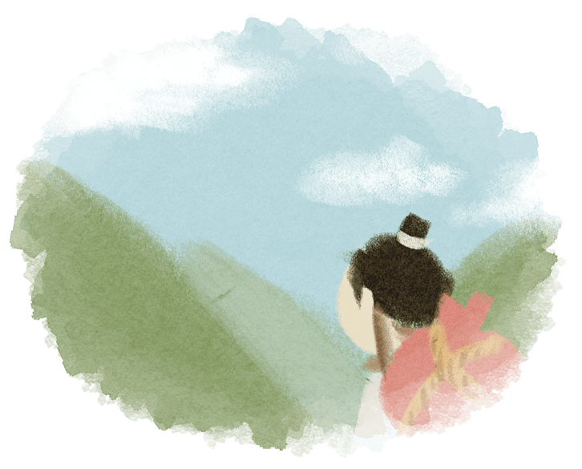
다음
조정의 신하로 일하고 있는 당신.
오늘은 최근 발생한 수해로 인한 피해복구를 위해 회의가 한창입니다.
서로서로 의견이 분분하던 중, 당신에게 번뜩이는 해결책이 하나 떠올랐습니다.
이견이 좁혀지지 않아 모두 고민에 빠진 회의장 속, 자신 있게 당신을 의견을 피력해 볼까요?
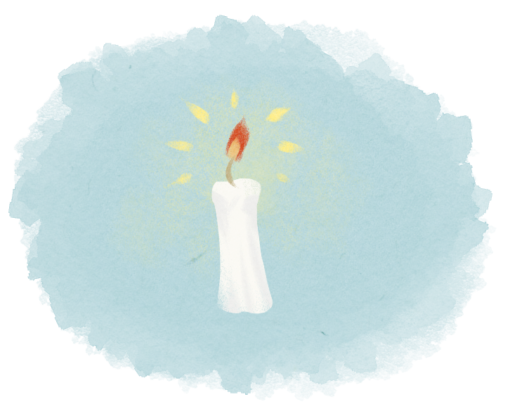
다음
당신은 수원지역에 새로 부임한 관리입니다.
최근 인근지역에 큰 풍년이 들어 마을단위의 큰 축제가 열린다는 소식을 들었습니다.
듣자 하니 각종 먹거리뿐만 아니라 신명 나는 탈춤도 볼 수 있는 마을 축제라고 합니다.
새로 부임해서 피곤하긴 하지만 이번 기회에 한번 참여해볼까요?
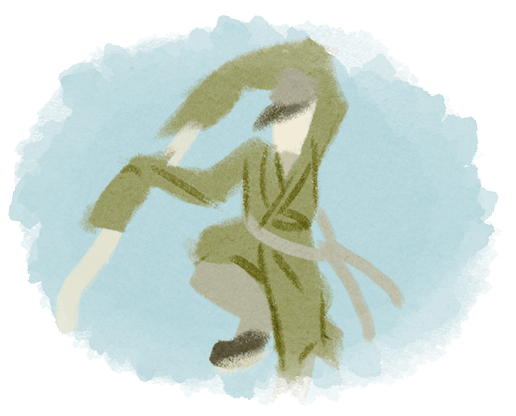
다음
순 휴일의 마지막인 오늘도 하루 종일 서책을 붙들고 공부한 당신.
벌써 유시(5~7시)가 되었습니다. 그때 오랜 벗이 함께 주막에 놀러가자고 제안합니다.
주막에서 뜨끈한 국밥과 술 한잔이면 그런대로 괜찮은 휴일의 마무리가 될 것 같은데 흔쾌히 벗과 함께 저잣거리로 향할까요?
다음
시장 저잣거리를 돌아다니다가 누군가가 당신을 불러 세웠습니다.
고개를 돌리니 인상 좋은 사람이 당신에게 부드럽게 말을 걸며 길을 묻기에 가는 길을 알려준 뒤 다시 갈 길을 가려던 찰나,
다시 그 사람이 당신을 부르며 자신을 ‘관상가’라 소개하며 계속해서 대화를 유도하기 시작합니다. 당신은 어떻게 하겠습니까?
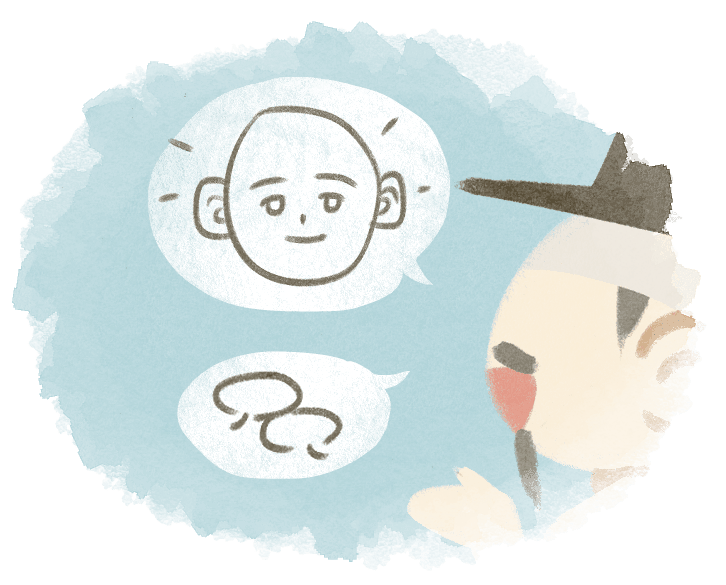
다음
저녁에 주막에 들려 간단히 식사를 하고 있을 때, 처음 보는 양반이 당신에게 불쑥 다가와 말을 걸기 시작했습니다.
자신을 최진사댁 둘째라고 소개한 그는 한껏 상기된 채 자신이 겪었던 시시콜콜한 일들을 풀어냈습니다.
다음
아침부터 소란스러운 소리에 잠이 깬 당신.
밖을 확인해보니 사람들이 벽보를 보며 웅성이고 있었고 벽보에는 주상께서 주최하는 경연에 대한 내용이 실려 있었습니다.
그리고 장원에게는 후한 포상도 주어진다는 이야기도 듣게 되었습니다.
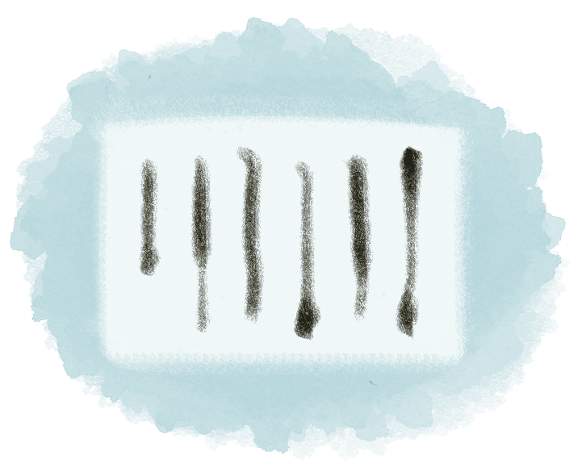
다음
금일 유시(5~7시)까지 올해 수원지역의 전량(전세로 거두어들이는 양곡)에 대해 호조에 올릴 서한을 준비하라는 업무를 지시 받은 당신.
얼마 전에 이와 비슷한 내용으로 동료가 보고한 서한을 본 적이 있지만 기억이 가물가물합니다.
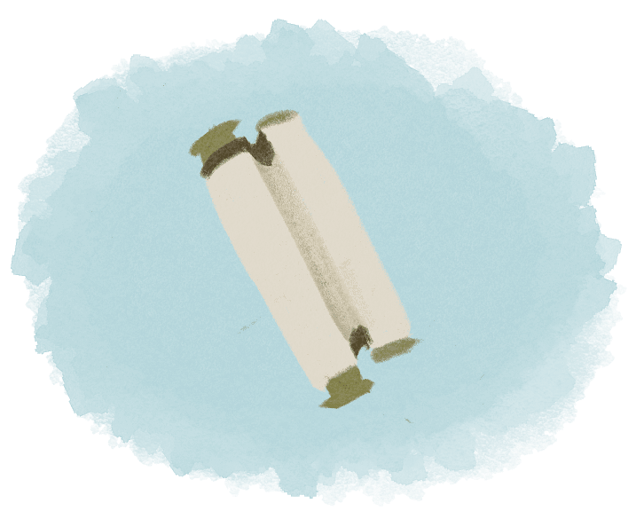
다음
저잣거리에 길거리 공연이 벌어졌다는 소문을 듣고 찾아가보니 흥겨운 마당놀이와 함께 다양한 국악 소리가 어우러지며 놀음이 한바탕 진행 중이었습니다.
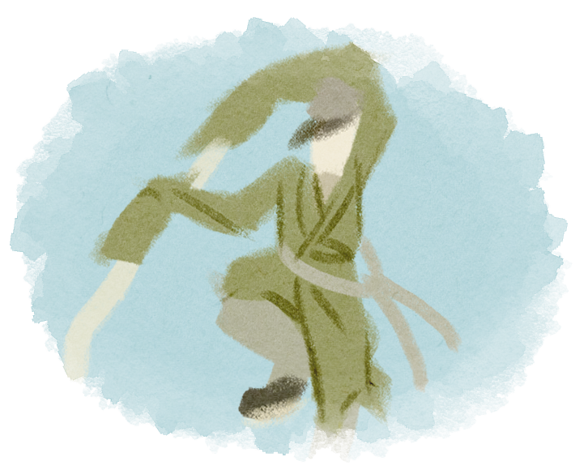
다음
유독 자주 뵙게 되어 가까운 사이가 된 한 상인이, 알고 보니 뒤에서 당신을 모함하고 심지어 자신의 잘못을 당신에게 뒤집어씌우려고 했음을 알게 되었습니다.
다행히 진실이 금방 드러나 당신은 누명을 벗게 되었고 그 상인은 죄값을 받게 되었습니다.
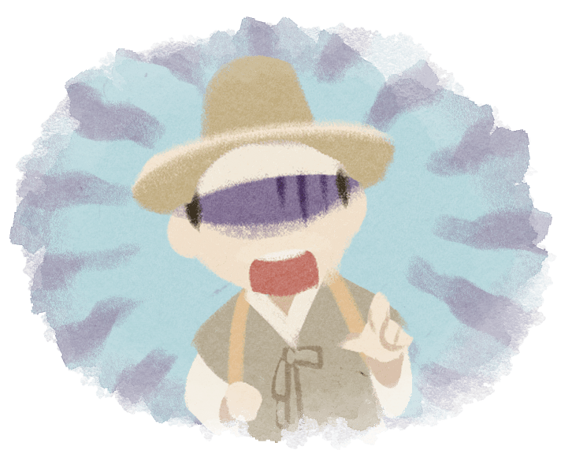
다음
오늘은 유독 운수가 좋은 날입니다.
오랜만에 개운한 아침을 맞이했고 새로 개점한 주막의 음식 역시 상당히 맛있었습니다.
날도 따뜻해 여유롭게 산책하기 좋았으며 잠시 들린 상회에선 상인과의 흥정도 성공해 덤까지 받았습니다.
다음
호조에 올릴 서신은 겨우 마무리 지었습니다.
바쁜 숨을 돌릴 틈도 잠시, 판적사(지금의 한국토지주택공사 격) 에서 토지 조사를 마친 뒤 결과를 내달까지 올리라는 지시가 내려왔습니다.
정리할 서류가 꽤나 많지만 종9품 동료들이 며칠 정도 물 맑은 곳에서 여유를 가지자고 합니다.
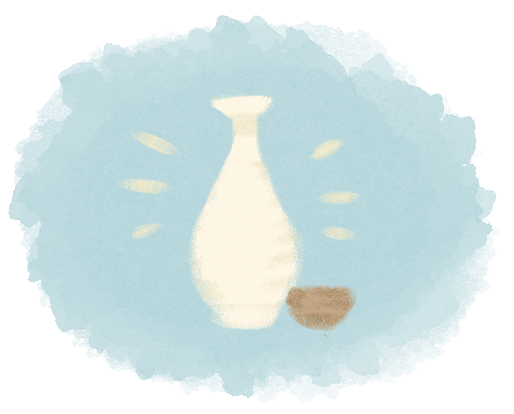
다음
저잣거리는 떨이 장사들로 북적이고 당신이 그 거리를 지나쳐 가려던 찰나 누군가 당신을 불러 세웁니다.
탐스러운 곶감을 흔들어 보이며 일 년에 한 번 나오기도 힘든 값이라며 흥정을 하는데요,
당신이 보기에도 가격은 상당히 저렴합니다. 시간과 돈이 넉넉한 당신은 이러한 상황에서 어떻게 하겠습니까?
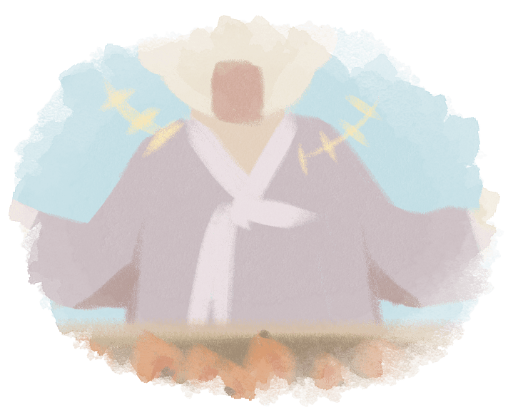
다음
내일 아침에 올해 노인직(80세가 넘는 어르신에게 주어지는 명예직)을 하사 받을 마을 어르신의 팔순 잔치가 있음을 알게 되었습니다.
일면식이 있는 건 아니지만 좋은 일인 만큼 마을 잔치에 참석해 볼까요?
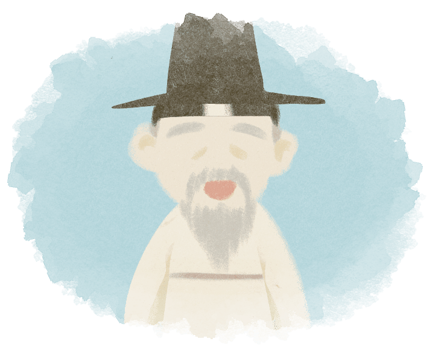
다음
큰맘 먹고 주문한 비단 저고리 한 벌이 도착했습니다. 그런데 일전에 상인이 말했던 제품과는 무언가 달라 보입니다.
가게들 중 가장 좋아 보이는 곳에서 주문했는데 질감도 거칠고 색감도 흐리멍덩합니다. 상인에게 돌아가 제품을 보여주며 물어보니 상인은 주문한 그대로 준 것이라고 합니다.
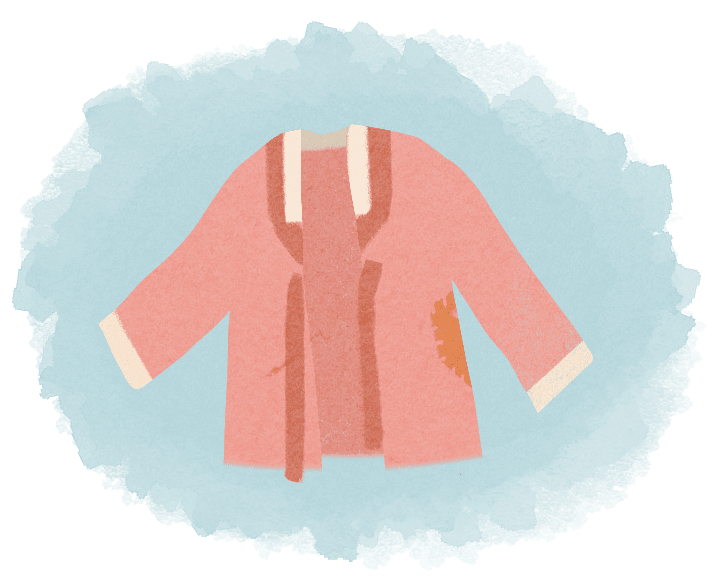
다음
추운 날씨에 장작을 패다 고뿔이 들었는지 몸이 영 좋지 않습니다.
그래도 마을 의원에게 받아온 탕약을 먹고 나니 조금은 나아진 것 같습니다. 그나저나 내일까지 옆집 장작을 해주기로 했는데 어떻게 하는게 좋을까요?